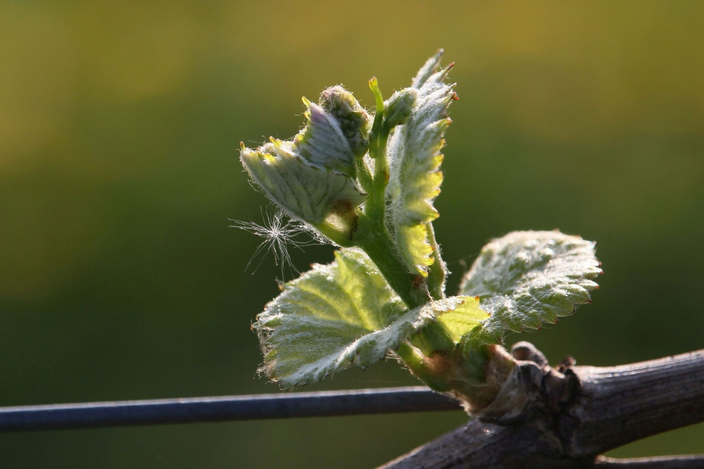
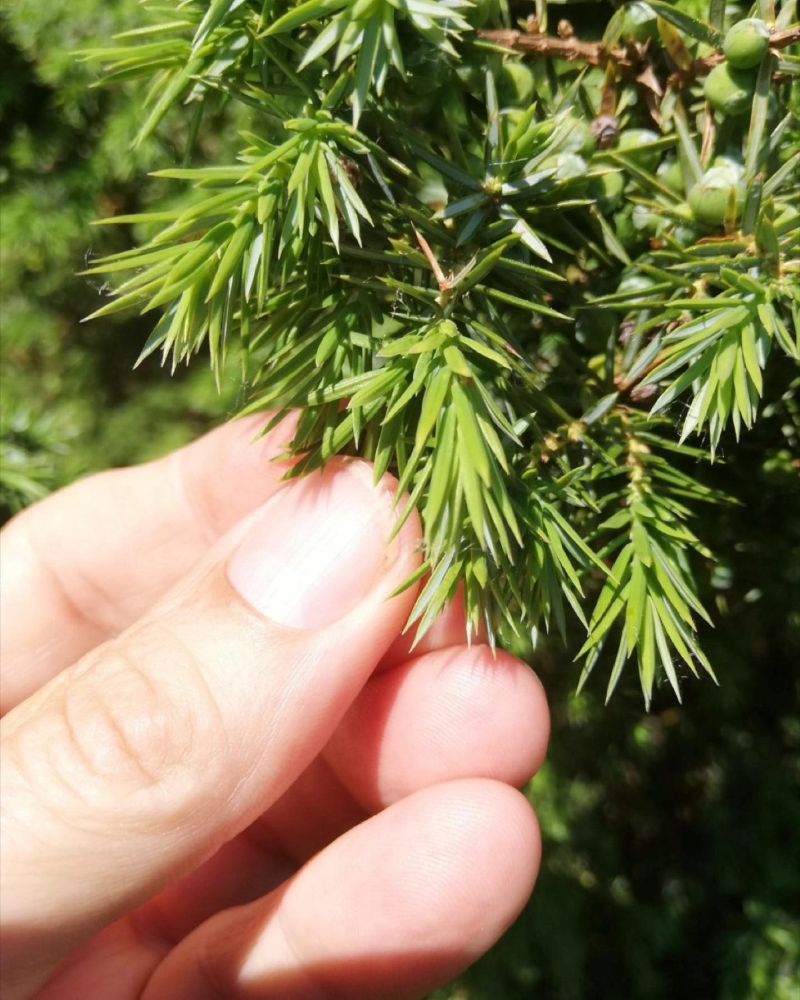
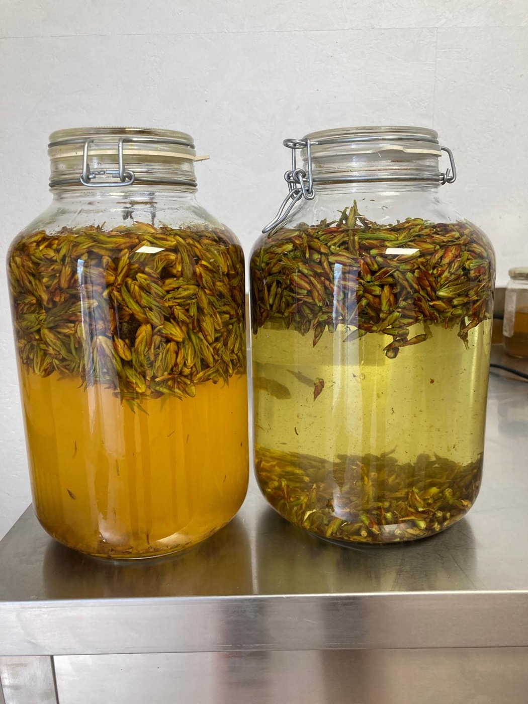
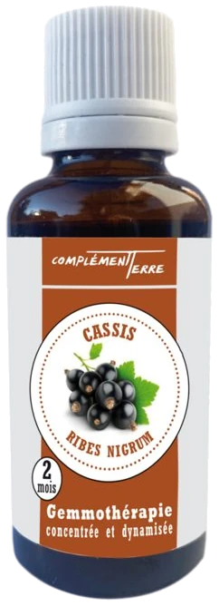
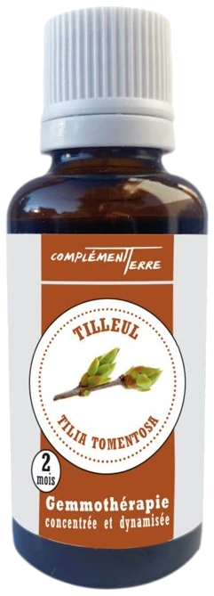
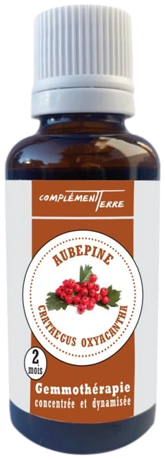
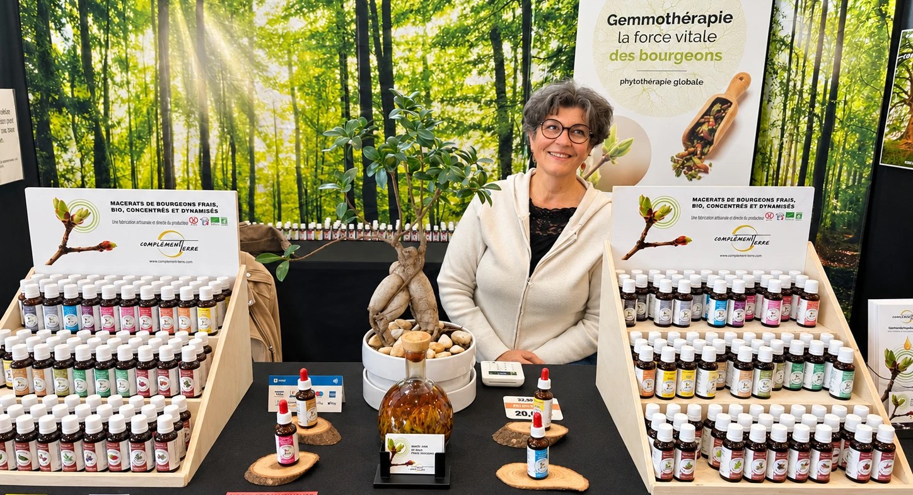
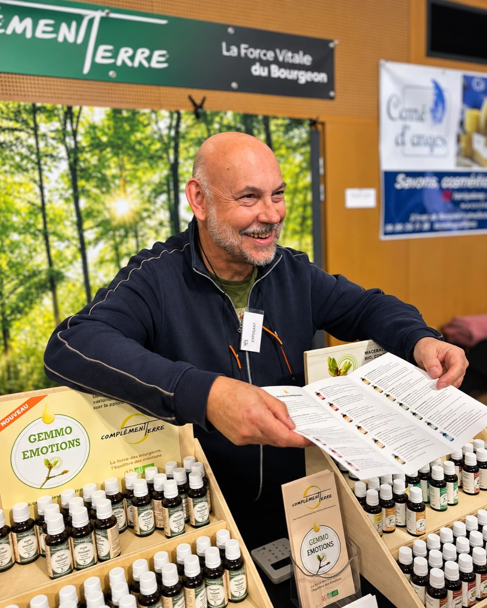
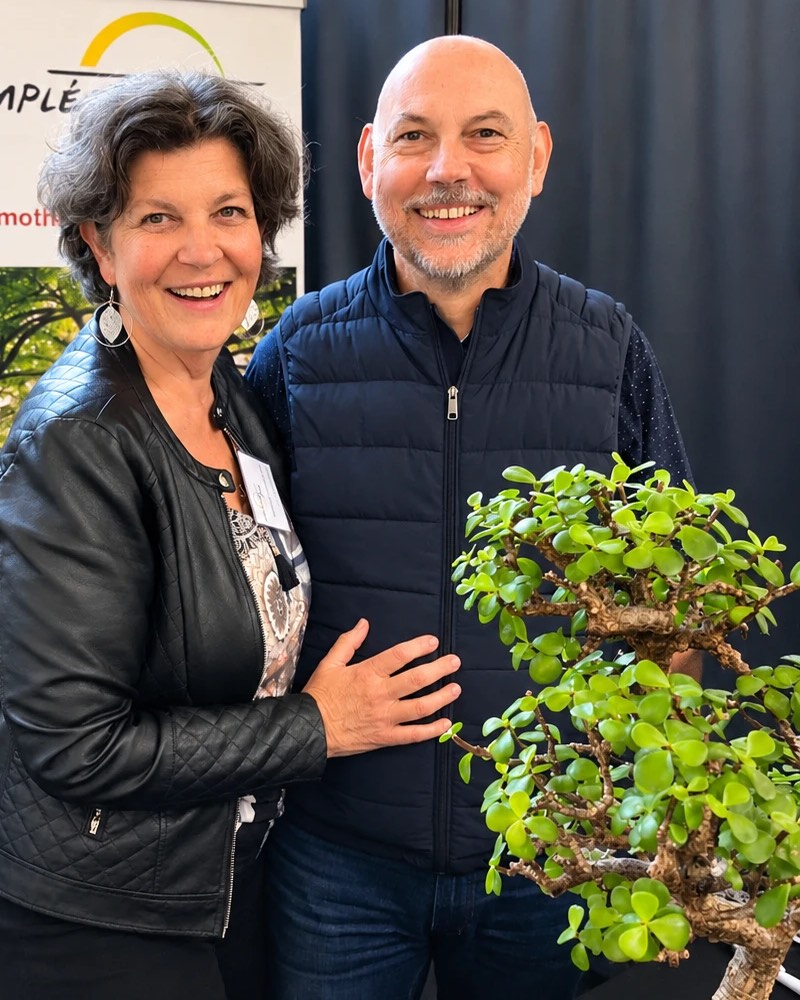
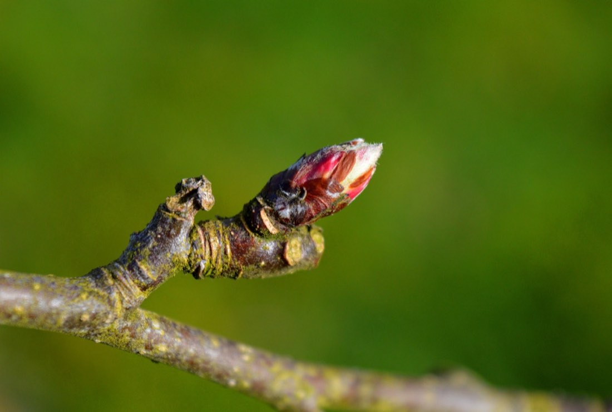

Du bourgeonau flacon.
Gemmothérapie bio et artisanale, à Mulhouse, en Alsace.
- Fabriqué à la main, en Alsace.
- Macéré, dynamisé, certifié bio.
- Quelques gouttes, un rituel.
Trois façons de découvrir
Complément Terre.
Un bourgeon, une association, une gamme dédiée aux émotions. Explorez nos préparations.
Le bourgeon, toute la force du printemps à venir.
Avant la feuille, avant la fleur, il y a le bourgeon. Nous le cueillons frais, au moment où l'arbre s'éveille, puis nous le laissons macérer lentement pour en recueillir toute la richesse.
Chaque macérat est confectionné à la main, à Mulhouse, avec soin. Une gemmothérapie artisanale et certifiée bio, pensée pour accompagner le quotidien, saison après saison.
Gemmothérapie vient du latin « gemmae », le bourgeon. Cette branche de la phytothérapie travaille les tissus embryonnaires des plantes : bourgeons et jeunes pousses.
Chaque bourgeon concentre toute la puissance de la plante dont il est issu. Nous le cueillons frais, au moment où l'arbre s'éveille.


Bourgeon de vigne, cueillette du genévrier
Le geste.
Trois temps, du rameau au flacon. Rien n'est pressé, tout est fait à la main.





Cueillette.
Le bourgeon frais, sélectionné et cueilli à la main, au moment exact où il s'éveille.
Des bourgeons frais, cueillis en pleine nature ou issus de cultures certifiées bio.
Macération.
Macéré, concentré, dynamisé. Le temps fait son œuvre, lentement, sans rien brusquer.
Mis en macération juste après la récolte, pour préserver leur vitalité.
Flacon.
Confectionné à la main, certifié bio, mis en flacon ambré. Prêt à vous accompagner.
Chaque flacon, avec passion et soin.

Les bourgeons et les jeunes pousses débordent d'une vitalité pétillante.
La gemmothérapie, c'est cette foi inébranlable dans le pouvoir de la nature. Une cure s'inscrit dans une démarche progressive : trois semaines, une pause, puis l'on recommence si besoin.
- 100 % naturelle
- Des bourgeons frais, issus de cueillettes ou de cultures bio.
- Macération immédiate
- Juste après la récolte, pour préserver leur vitalité.
- Fabriqués à la main
- Chaque flacon, avec passion et soin.
Une aventure de couple, au service du vivant.

Complément Terre, c'est avant tout l'histoire d'un couple uni par une même passion : la nature, le vivant, et la recherche d'un mieux-être au quotidien. Deux personnalités complémentaires, qui associent leurs sensibilités pour proposer des approches naturelles.
Une entreprise artisanale, à taille humaine, où la relation et l'écoute occupent une place essentielle : des macérats confectionnés à la main, à partir de bourgeons sélectionnés.
Notre envie : accompagner chaque personne sur le chemin de la vitalité, avec bienveillance, humour et simplicité.
Muriel & SimonSur les salons, à votre rencontre.
Muriel et Simon exposent sur de nombreux salons bio et bien-être, en Alsace et aux alentours.



Les salons et événements sont toujours des moments privilégiés pour échanger autrement qu'à travers un écran ou un catalogue.
Nous sommes impatients de vous accueillir sur notre stand, de vous faire découvrir l'univers de Complément Terre et de partager avec vous notre passion pour les bourgeons et la gemmothérapie.
- Parmi nos rendez-vous
- Fête Éco Bio de Chavannes-sur-l'Étang (Haut-Rhin), 13 et 14 juin 2026
Le bourgeon, à l'état brut.
Trente-huit macérats de bourgeons frais, concentrés et dynamisés, certifiés bio. Un arbre, un bourgeon, un flacon.
38 macérats à explorer

Trois gammes.Une seule terre.
38 macérats de bourgeons19 complexes7 Gemmo Émotions